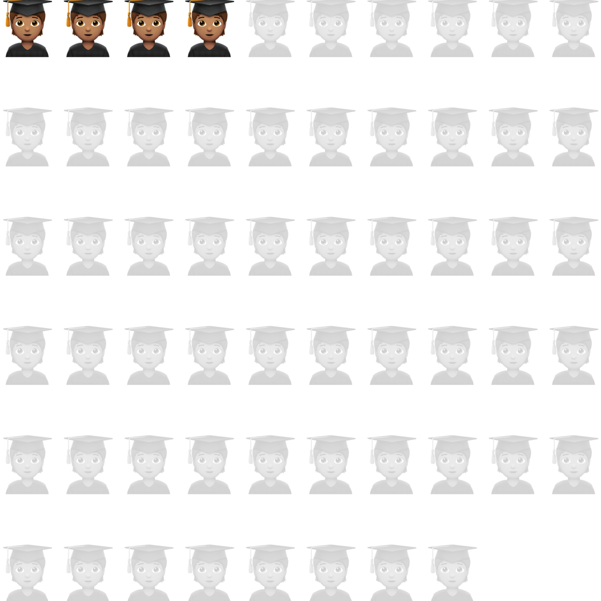
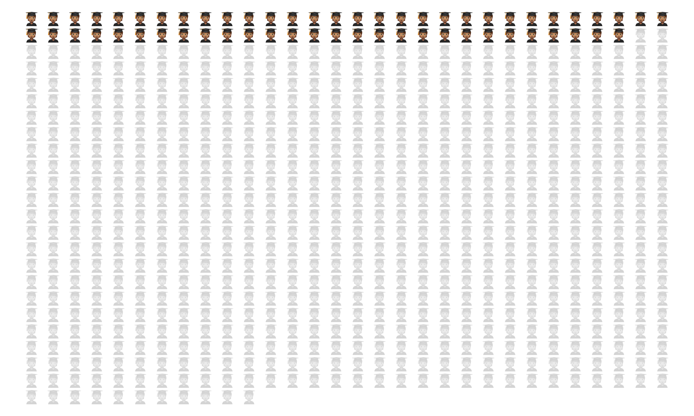
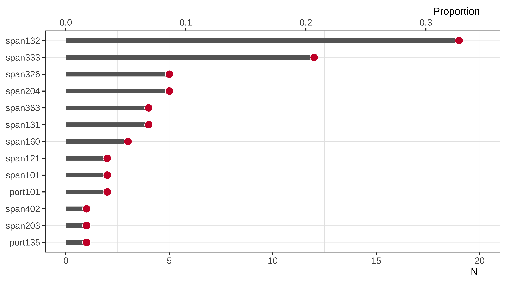
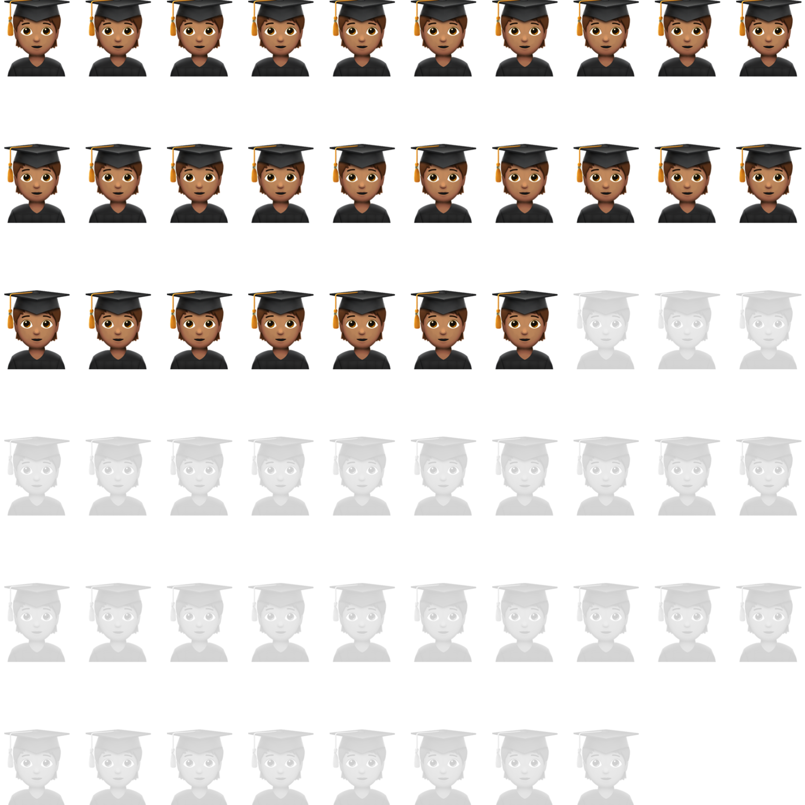
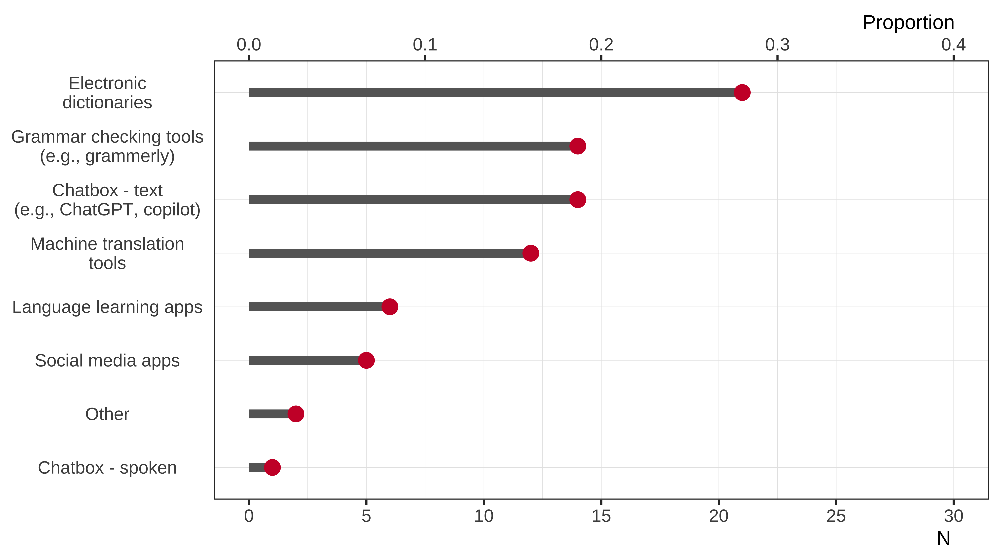
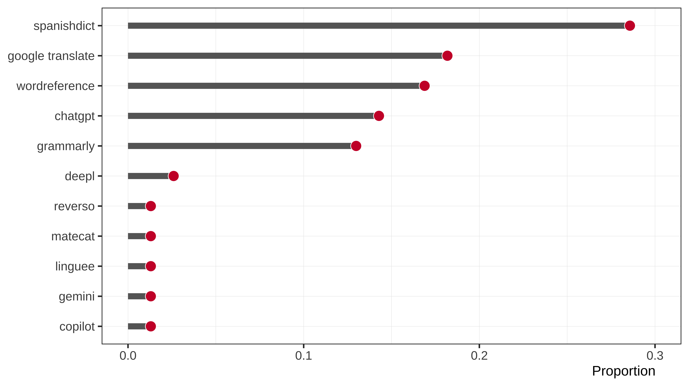
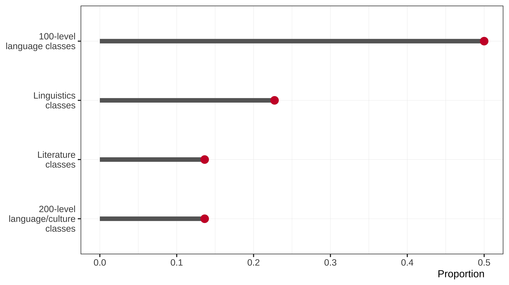
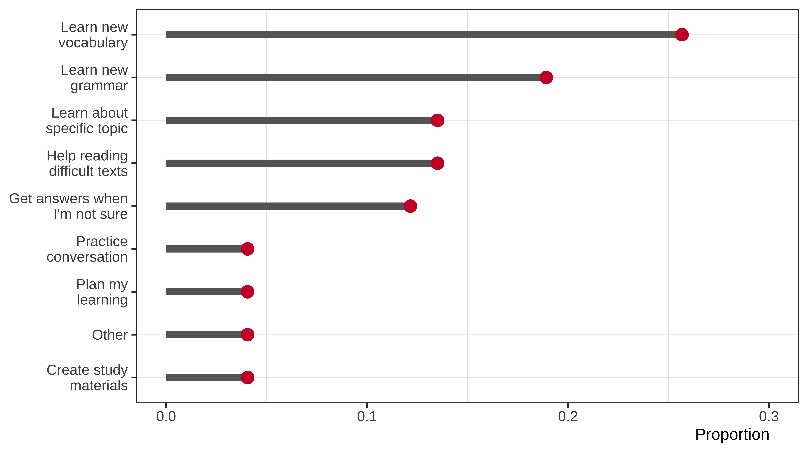
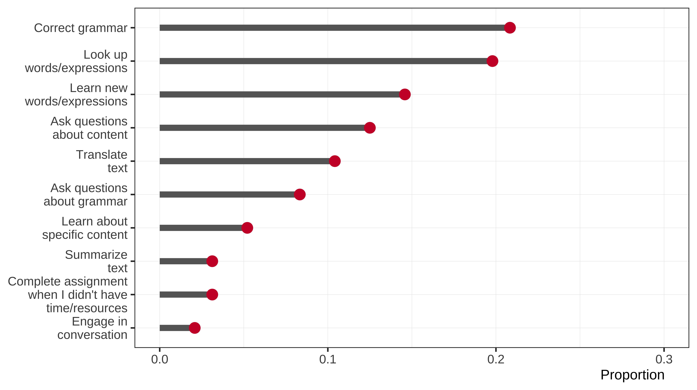
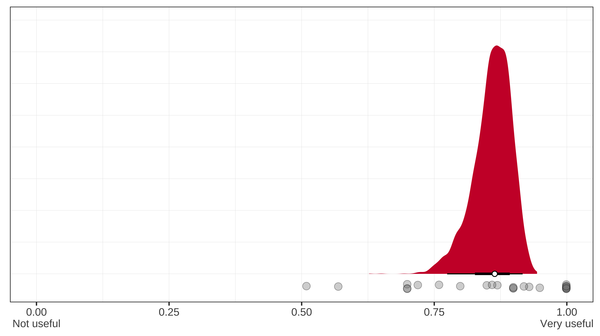

Department of Spanish and Portuguese
Deptarment Meeting | AI survey
Joseph V. Casillas
Rutgers University
2025-03-10
Descriptives
- 58 participants 🧑🏽🎓
- 8.27% of total enrollment

Descriptives
- 58 participants 🧑🏽🎓
- 8.27% of total enrollment (701 UG students)
- Enrolled in 13 distinct courses
- Completed survey in appox. 5 minutes

Have you received any training regarding the use of AI or other technologies for language learning?
(approx. 7%)
had prior training
with AI
- “In 401 we were taught to use AI tools such as Matecat to expedite translation but still checking everything before accepting translations.”
- “I am a Computer Science major, so I have learned about AI.”
- “AI duolingo, to learn more Spanish, I ask ChatGPT to give me daily phrases in Spanish everyday to practice.”
- “AI can be a tool to help you learn a language.”
Have you used any technologies to do your assignments this semester?

(approx. 47%)
used technologies
on an assignment
What type of technologies have you used?

Specifically which technologies?

In which classes did you use AI technologies?

How did your use of AI technologies differ for each class?
- t makes things faster. This applies to professors as well. My SPAN 121 activities were also created with AI, so…
- Do my assignments for me
- I only used AI for translation courses, not for literature, linguistics, or writing.
- Using AI to get words that are more common to use for the context and double checking if my wording and grammar is correct.
- to understand terms i do not know
- It didn’t.
- I only had one class
- They did not differ
- Sometimes I use translators to look up vocabulary words I’m unfamiliar with.
- I don’t really use too much AI technologies because I don’t think it does things as well as a human, but sometimes I use it to get a summary of a topic or do some background searching. It also helps you to think in different ways and formulate an outline.
- If I needed help to guide me through a project or brainstorm ideas, I would use AI to help me to do.
- It didn’t really differ I just had AI do “busy work” once I understood what I was working with/needed to do if I had to do it multiple times over since my performances in class were not poor I did not feel the need to practice further.
- I like to use ai to help me with my writing, whether its editing or generating ideas for main points. This differed from my math class, where the math is too complex for chatgpt.
- I use AI to elevate my speaking and communication skills in Spanish.
- I used it to generate information about Spanish speaking countries quickly
- I have only taken one linguistic class
- I just look up words I don’t know
- used AI to rephrase certain texts that were harder for me to understand/ used spansih words that i did not yet know
Themes and Definitions:
- Efficiency: Students used AI to complete tasks faster or reduce workload.
- Subject-Specific Use: AI was mainly used for translation and writing-related courses.
- Idea Generation & Assistance: Some students used AI to brainstorm or improve writing.
- Minimal or No Use: A few students avoided AI due to concerns over accuracy or reliance.
Illustrative Quotes:
- “It makes things faster. This applies to professors as well.”
- “I only used AI for translation courses, not for literature, linguistics, or writing.”
- “I like to use AI to help me with my writing, whether it’s editing or generating ideas for main points.”
- “I don’t really use too much AI because I don’t think it does things as well as a human.”
What were your goals in using these tools?

- get things done faster
- Do my assignments for me
- For basic automatic translations (part of the curriculum)
- Overall using AI to help out with any last minute adjustments to my rough drafts for my Spanish translations to ensure that they are accurate.
- To double check my work
- I care about my grades so if I feel my skill does not meet the standards of the asisgment I will either check it with AI. If I am rushed or overburdened I may just use it to complete the assignment in its entirety although I prefer not to.
- I needed a partner to practice Portuguese.
- Sometimes i can’t progress in the material without using technology to help me
- I use AI when I come across a vocab word I’m unsure of so I can better understand what I’m reading. Learning new vocab also helps me in conversation.
- Technology was very useful for translating phrases or words that were hard to understand.
- My goal of using technology was essentially just to look up words when I didn’t know them and to outline specific ideas that I might need to think about for presentations.
- The goal is for me to understand whatever I am learning better.
- The USE of outside tools helped me confirm the conjugation of various verbs in various different tenses when I wasn’t sure, making it easy and convenient to learn: making me willing to learn. Additionally, tools like chatGPT work as streamlined search engines because they can provide a lot of info regarding a particular topic if I am researching for some small bit of a project since it can be used in much the same way one would use google.
- When I had gaps in my knowledge in Spanish such as for grammar, vocabulary, conjugation, or translation between English and Spanish, these tools helped me learn more Spanish.
- I used AI/WordReference/Reverso when I needed to construct a sentence and I was stuck, or after I did all my work and then I would paste my responses in AI to proof read, and tell it to correct my mistakes and note where I was correction. Often times this included subject/verb agreement, missing accents, verb conjugations, or improper use of vocabulary, but overall helped me better write texts as the semester progressed.
- I like to use AI to help me edit so I learn better grammar since I never learned it in K-12. I also have imput a reading that had too academic language for my understanding, and I asked it to simplify it for me so I could understand.
- My first priority in Spanish learning is to speak better.
- I use translation technology to help me figure out grammar and unknown vocabulary
- My main goals were to understand what I was reading whether that was directly translating senteces using google translate and spanish dict or having chatgpt summarize information so that it is easier for me to understand.
Themes and Definitions:
- Efficiency & Productivity: Using AI to complete work quickly or assist with last-minute tasks.
- Translation & Comprehension: AI used to translate words, confirm accuracy, and enhance understanding.
- Grammar & Writing Assistance: AI helped with sentence construction, proofreading, and grammar checks.
- Speaking & Practice: Some students used AI for conversational practice or understanding spoken language.
Illustrative Quotes:
- “Get things done faster.”
- “My goal was to look up words and outline ideas for presentations.”
- “I use AI to proofread, correct mistakes, and improve my writing over time.”
- “I needed a partner to practice Portuguese.”
How have you used these technologies?

- get things done faster
- Do my assignments for me
- Sometimes when I am not sure of how to write something, I will ask the AI questions in how to format what I need to do.
- I have used these technologies not to cheat on my work, but as a resource to aid my studying. Technology is an on-demand study buddy :)
- Used google translate to double check work
- I did all those things
- I used the new vocabulary in my assignments.
- Translate keyword vocab I don’t know, look up conjugations when I forget them
- I have used these technologies to learn unfamiliar vocab.
- In addition to translating unknown words, it was helpful for creating study guides and practice for grammar.
- I think that technology is a great way to learn new words because it is harder to look through a dictionary then it is to just search up a word.
- Sometimes I am unsure of unfamiliar words or expressions, and AI can help with that.
- The USE of outside tools helped me confirm the conjugation of various verbs in various different tenses when I wasn’t sure, making it easy and convenient to learn: making me willing to learn. Additionally, tools like chatGPT work as streamlined search engines because they can provide a lot of info regarding a particular topic if I am researching for some small bit of a project since it can be used in much the same way one would use google.
- I have used the technologies to translates phrases and texts I didn’t understand, to check my answers to questions, and to check I am writing in Spanish correctly.
- Elaborated in the previous response
- Sometimes when I can’t grasp a concept, I ask chatgpt to dumb it down for me so I can get a better understanding from there and it’s been very helpful!
- learn new vocab and phrases everyday
- Not much to elaborate on
- I used the technologies to understand what I was reading and translating/ summarizing as well as learning about specific details of spanish in grammar and words/ expressions
Themes and Definitions:
- Checking & Learning: Students used AI to check answers, verify grammar, and understand new vocab.
- Writing & Proofreading: AI assisted in structuring sentences and improving coherence.
- Study Assistance: AI acted as an on-demand tutor, creating study guides and simplifying concepts.
- Limited Use: Some students avoided AI due to concerns about reliance or inaccuracy.
Illustrative Quotes:
- “I have used AI to learn unfamiliar vocab.”
- “I ask AI how to format what I need to do.”
- “I use AI to confirm verb conjugations and research small project details.”
- “Sometimes I ask ChatGPT to dumb down concepts for better understanding.”
How useful or unuseful were these technologies?

- I loved that the AI sites would translate all text and especially help with maintaining formatting in documents, however, they would be poorly done if not checked by a human, they made errors often.
- explains terms in many ways
- Somewhat useful, not always correct
- Given they were relaible it would be 100% but often you have to check their accurcay with your own spanish knowledge and refine them with commands.
- I listened carefully to the pronunciation in Portuguese while participating in a conversation with chatgbt.
- Without them, I would struggle a lot more because I wouldn’t be able to complete assignments since I don’t know the words or I forgot a conjugation
- these technologies were useful in helping me to understand and bolster my vocabulary.
- They were very effective for translating an unknown phrase quickly and efficiently, but it could have been done with a physical dictionary as well.
- They were extremely useful, but in certain cases such as making presentations they are only helpful to formulate an outline. The actual writing still needs to be done by a person.
- It is very useful as a guide in coming up with ideas.
- These tools are very useful because these outside tools helped me confirm the conjugation of various verbs in various different tenses when I wasn’t sure, making it easy and convenient to learn: making me willing to learn. Additionally, tools like chatGPT work as streamlined search engines because they can provide a lot of info regarding a particular topic if I am researching for some small bit of a project since it can be used in much the same way one would use google.
- They were very useful in helping me learn the Spanish I didn’t know. They helped me when I had trouble understanding Spanish or responding in Spanish.
- The technologies were useful because I didn’t know how to effectively conjugate past/present/future verbs coming in. Watching youtube and seeing how ai conjugated helped me pattern recognize and apply it myself. Also, I would occasionally copy texts in and paste them in after I had read them myself, read the translation, and then re-read the text again so I could piece together what I missed the first time.
- AI technologies have helped me a lot with school and understanding new concepts. I like that I can ask it more specific questions than google and get very specific answers.
- It helps me a lot with language learning because it can creates different scenarios for me
- I needed to know the meaning of the words, so I can complete the assignment.
- They were very beneficial to my learning and correcting my grammar mistakes
- I needed to know some words to understand the text so it was extremely helpful to learn the words.
- they were very useful because they helped me understand it and it took less time than it would have for me to manually look up each individual thing and sift through many sources which would just be an inefficient use of time
Themes and Definitions:
- Highly Useful: AI was useful for translations, learning grammar, and checking work.
- Needs Human Oversight: AI was effective but required verification for accuracy.
- Enhances Learning: AI helped students recognize patterns and improve comprehension.
- Limited Application: Some AI tools worked better for certain tasks than others.
Illustrative Quotes:
- “Without AI, I would struggle more with assignments.”
- “AI helps confirm my conjugations and gives me confidence to learn.”
- “I liked that AI explained concepts in different ways.”
- “It is only useful if checked by a human, as it makes errors often.”
What would you like to be able to do with these tools?
What features are missing?
- Do my assignments for me
- I like the use of AI in translation, and would only appreciate if the sites also pulled up parallel texts as resources.
- Better recommendations for other Spanish words. AI recently just started speaking in Spanish.
- I would like to be able to engage in spoken conversations in Spanish to practcie my speaking and conversational skills.
- AI is only limited by your imagination and familiarity with the machine. It can do anything as long as you ask it the right things. I just wish its accuracy was gaged.
- I would like to have my pronunciation corrected when speaking Portuguese on chatgbt.
- The same usage that I have been using is great
- I would like to be able to gain study materials (flashcards, practice problems, etc) from these tools.
- I would like to be able to converse with AI in order to practice my Spanish.
- They already provide more than enough but I supose if they could be extended to audio that would be intesting for a language course.
- I would like it to better help me with sentence structure, verb conjugation and other gramatical conventions
- I would like for them to be able to make me flashcards without having to pay extra for that feature :(
- It will be great if i could actually have a verbal conversation with AI to practice my Spanish
- Accuracy - some colloquial terms are not included
- Nothing really
- i dont know
Themes and Definitions:
- Speaking Practice: Many students wanted AI tools that engage in spoken conversation.
- Grammar & Writing Assistance: Better recommendations for sentence structure and conjugation.
- Flashcards & Study Materials: Automated study aids like flashcards and practice problems.
- Improved Accuracy: AI tools should better recognize colloquial terms and refine responses.
Illustrative Quotes:
- “I would like to engage in spoken conversations in Spanish to practice my skills.”
- “I wish AI helped me with sentence structure and verb conjugation better.”
- “It would be great if AI could generate flashcards without extra cost.”
- “Some colloquial terms are missing in AI responses.”
Should the Department of Spanish and Portuguese have a strict policy regarding the use of AI?
What should this policy be?
- I think the policy should allow for using AI for proofreading or assistance, but not allow plagiarism from AI sources.
- No because it’s hard to tell if studnets use AI or not
- I believe translation work should be open to all AI as it will be in the workforce; if students do not check the AI answers it will be obviously incorrect and awkwardly composed. For writing courses, I believe using AI to construct text is cheating, just like it would be in any other department.
- I do believe a stricter policy should be in place. I feel the policy should be that use of AI on any assignment or test that requires the student to demonstrate learning should be prohibited and considered cheating. Use of AI on assignments and tests where outside consultation are allowed should be allowed as well.
- No, we already use AI and machine tools for learning.
- I believe that the Department of Spanish and Portuguese should educate students on ways to use AI that can aid in their studies. I do not think that students use these technologies to cheat, especially in upper-level courses. I believe tehre should be a “guidebook” for how students can use AI to improve their language skills.
- When it comes to completing assignments yes. But especially in translating classes, it is helpful to explain a word or a topic
- Yes. I think this department should have a policy against using AI to translate homework responses.
- Should be used for double checking work not translating completely
- Yes but also recognize this policy cannot be enforced in many cases. Assessments but especially homework needs to be designed that using AI is either impossible or more difficult than doing it traditionally would be. Students directly copying and pasting to write papers is easy to spot so teachers just need to be trained to do that.
- Yes they should. When we learn about languages we are learning about cultures and countries. Using AI comes at the expense of our planet, taking more and more water resources (among others) with every prompt. Using AI means that a student might not actually be learning but rely on an environmentally draining technology to solve issues for them.
- I believe there should be a rule regarding the use of AI. I don’t think it should be completely prohibited. I believe students should be able to use for ideas regarding their work, but not for doing their work.
- As native spanish speaker and user of AI for translations services for my church, I can agree that AI is a great help however it needs human quality review, I think there should be a balance in the use of AI, but not a ban from using it. I have a disability and AI helps me to organize my drafts.
- I would recommend using AI for listening comprehension activities and practice in speaking Spanish and Portuguese. I would encourage a strict policy for assignments that focus on writing skills in Spanish and Portuguese.
- Yes, I believe there should be no use of AI in the Spanish and Portuguese department because then you don’t learn.
- I believe that it should be strict for classes which are of a higher caliber, more difficult, and are generally needed for Majors. Usually however, it is very hard to write something that has 0% AI due to the inconsistency of trackers. A limit of 50% or more should be in place
- I think if it is regulated properly, the department can use AI to their advantage when educating on a language but if they can’t then they shouldn’t use it.
- Probably just a policy making sure students don’t use AI to directly translate their work.
- No, should be free for the student to choose the help they need
- I’m not quite sure. AI is still so new. Because of this, some people are using it, others aren’t. I’m sure people are still working out the different functions of it. In terms of doing a student’s assignments for them, that should probably not be happening. In terms of helping them actually learn a language and explain a concept to them, AI might be useful.
- I think it should be able to be used for looking up specific words, but not assignments.
- I’m not sure.
- No, I don’t think there should be a strict policy. I think students should be able to learn how to use technologies as a tool to aid their learning.
- No, I believe AI is becoming a very normal tool in education.
- I think that the use of AI and technologies should be allowed as long as it is not abused. I think that it is a very good tool for learning and has greatly helped me to learn and expand my Spanish vocabulary this semester.
- I don’t think a strict policy is necessary, because I think most people use AI as a tool rather than for cheating. AI can be helpful in helping a student organize their thoughts.
- I believe policy regarding AI should penalize students that do not use their own ideas and instead go to generative AI to help them complete their work from idea to execution. Of course, there are types of assessments that cannot incorporate AI in their execution such as verbal assessments which is much of what spanish, at least this course, contains. However, for courses with roots in writing/grammer, the use of AI should be fairly restricted I reckon.
- No strict policy. It should be used to help and not fully complete assignments. Practice speaking and writing in Spanish without these technologies in class.
- I’m torn between yes and no. For one of my other language classes (French) I think AI brought down my skill level because before in high school I was used to writing everything manually (essays) and now I just rely on AI. For spanish, at least the intermediate level, I think it helped me learn more and fill the gaps. It is a blessing and a curse, because my goal ultimately is to learn language but I don’t think I had an effective semester in my french language class as compared to intermediate spanish. this could also have been due to taking 2 languages, speaking english, and then a fourth language at home, but who knows.
- I feel like AI isn’t really necessary in language courses assignment wise and it should be everyones goal to actually learn content. With that being said, platforms like Spanish Dict can help study and understand new words.
- not exactly, overly relying on AI can cause problems but AI does make language learning much effective.
- For this course, no AI should be used
- No, students need the technology to complete their work, besides the professor will know who is not using it correctly or not.
- While I believe that there should be a policy, I don’t believe that it should be entirely strict.
- Translation technology is benefiti, using AI to create answers is not beneficial to learning
- Yes no explicit copying from AI
- Yes, no Google Translate
- I think it is a form of academic fraud/plagiarism, because anything more than looking up an individual word or two means that the student is no longer the individual creating/writing the actual assignment.
- Yes. It should not permit it, it defeats the point of learning of a language.
- I feel that grammar/spelling checkers are fair and reasonable to use in coursework. On the other hand, generative AI (like chatGPT) should not be acceptable.
- I think it depends on the context of the assignment. AI is something that can be a tool but can also be used to cheat. For some essays, I’ve used AI simply as a way to get started or to rewrite a whole paragraph in present tense. It’s clear that many companies are using AI, so it does not make sense to completely ban it. I think AI can be used and if it is, it should be used as a tool and should be made clear when it is used. Otherwise, it should be considered cheating.
- I don’t think so,
- Yes, I think the department should implement a balanced policy on AI use, encouraging students to be ethical and be original with their work. I think that the policy should include that AI is only to be used when unsure of how to start a writing assignment and then for one to continue it on their own.
- I think it shouldn’t be as strict as it is now. AI can be used as a good tool to brainstorm ideas, explain difficult topics/terms, and help working students succeed by reducing the amount of time needed to do assignments. I believe the strict policy regarding the use of AI should be for people who turn in work that is completely made by AI, without human proofreading or any human input. The students shouldn’t entirely rely on AI to do their assignments but rather use AI as a tool to help their learning.
- Regardless of said policy, AI is still incredibly young without a proper way for 1) students to use accurately without any incorrect information or creating a reliance on it, and 2) determining what is AI or not is still incredibly inconsistent. In the same light that plagiarism should be banned, AI should be as well for the most part, however, it is ignorant to ignore the increased use and accuracy of said AI’s in the coming years. Just as people use Google for answers, they are using AI for answers, and that wouldn’t count as cheating or going against academic integrity (outside the classroom at least), but Google doesn’t write full fledged answers out for you either. I believe we have to have a larger understanding of AI’s capabilities and limitations, before we outright ban it, leave it alone, or leave it in a weird limbo like now.
- no there should not be a strict policy regarding the use of ai- ai should be allowed to be used as a tool for learning
- I think the use of AI is just something that has to be accepted, instead of a strict policy against it, encourage students to use it on a need-to basis, as a tool to help rather than a tool to do the work.
- They should have a strict policy regarding the use of AI.
Themes and Definitions:
- Guided AI Use: AI should be allowed for proofreading and study assistance but not for full assignments.
- Strict Limitations: Some students believe AI use should be minimized to encourage real learning.
- Case-by-Case Approach: AI should be regulated depending on the course and assignment type.
- No Restrictions: Others feel AI is a natural tool and should be freely available for learning.
Illustrative Quotes:
- “AI should be used for proofreading, not for plagiarism.”
- “AI should not be allowed for assignments that require demonstrated learning.”
- “It should be used for checking work but not for full translations.”
- “Students should be free to use AI as they see fit.”